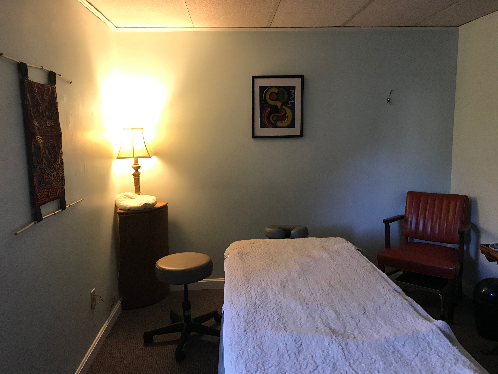

Dr. Tilton is committed to providing affordable treatment for low-income clients.
She has set her fee at $12 per appointment, the current Massachusetts minimum wage, for all such clients seeking medical acupuncture services.
Her rate for NADA (addiction/mental wellness) is $5 at her Healing Arts Office (She offers NADA treatment for free on Tuesdays
at the First Congregational Church in Wellfleet). Dr. Tilton does not ask for proof of income. Higher earning clients will be charged at a higher rate.
Addiction/Mental Wellness Services in Wellfleet
As an Outreach Ministry of the First Congregational Church in Wellfleet, Massachusetts, Dr. Tilton
offers a free clinic for addiction/mental wellness treatment using an approach developed by
the National Acupuncture Detoxification Association. This approach involves gentle placement of up to
5 small disposable needles into specific sites on each ear. The person being treated sits quietly in a
group setting for 30-45 minutes. This service is available on Tuesdays from 3:00 PM -6:00 PM.